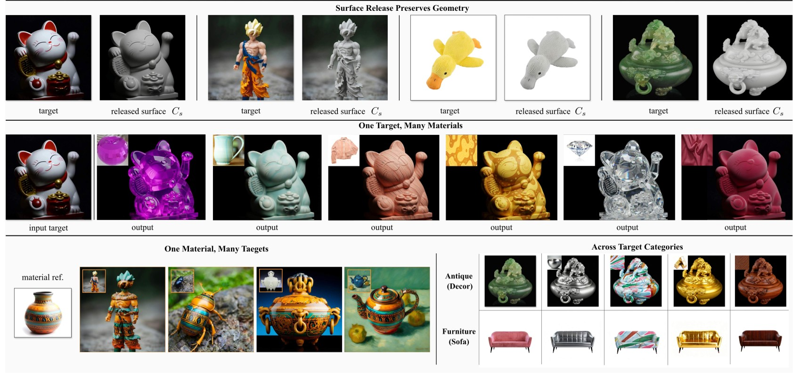
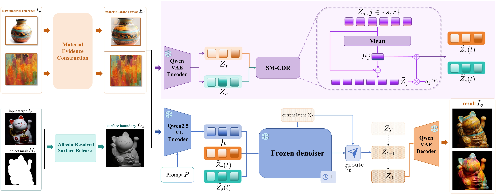
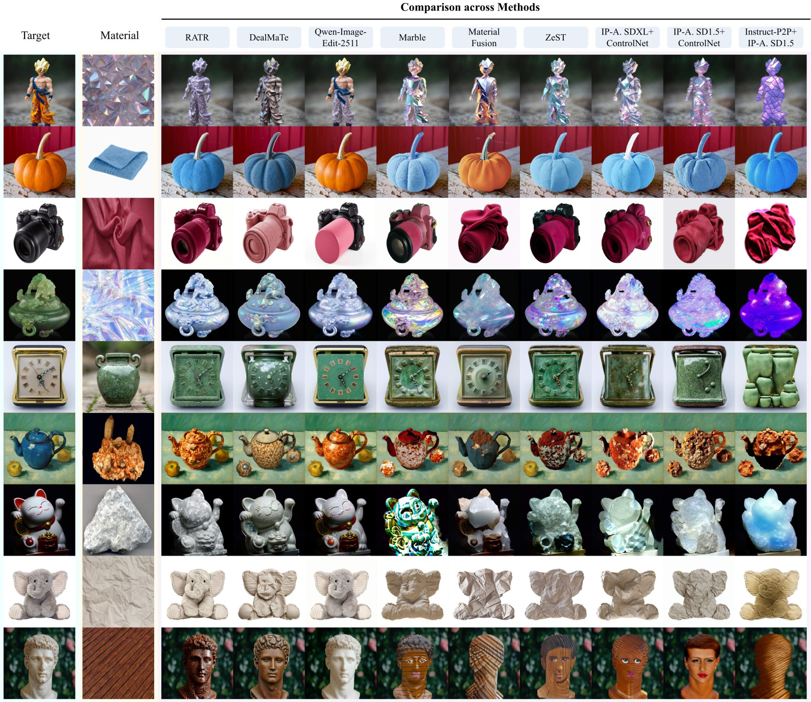
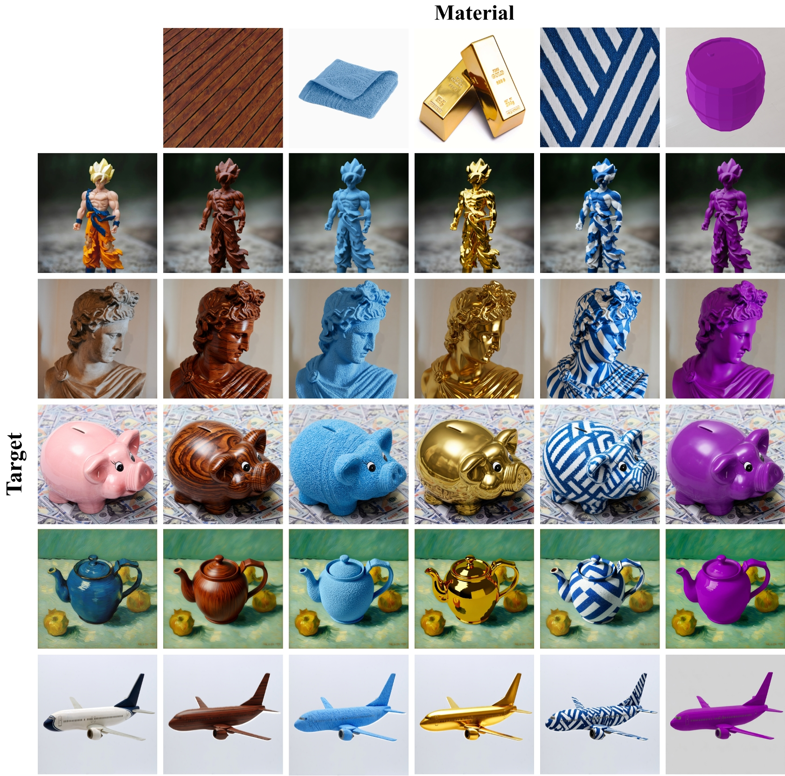
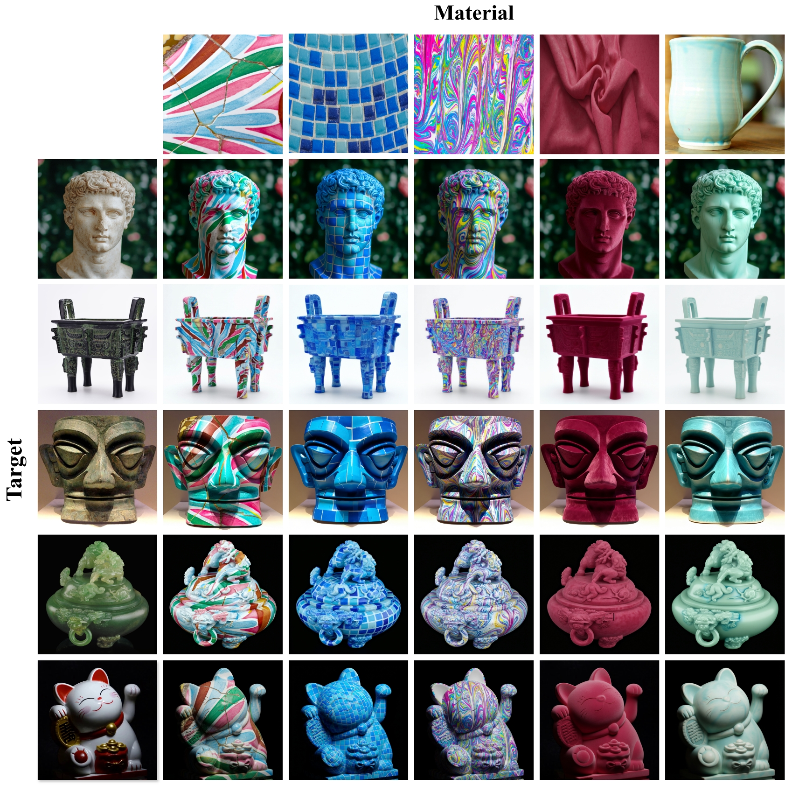

Material rebinding aims to transfer the material appearance from a reference image while preserving the target object's geometry and identity. Existing methods often struggle to balance material fidelity with structural preservation due to the coupled influence of structural and appearance cues in their visual conditions. We identify role entanglement in the target and reference conditions as a contributing factor: the target condition carries both geometry and its original appearance while the reference condition contains material cues alongside object-specific structure. To address this issue, we propose RATR, a training-free material rebinding method built on a diffusion-based image editor. RATR assigns complementary structural and material roles to the target and reference conditions, respectively, and dynamically adjusts their contributions during denoising. To make the target condition primarily convey structure, we introduce an albedo-resolved surface release mechanism, which suppresses the target's original surface appearance while retaining geometric cues, yielding a structure-oriented condition for material transfer. On the reference side, the designed material evidence isolation mechanism emphasizes material cues while reducing interference from object-specific structure, yielding a complementary material-oriented condition. Surface–material conditional direction routing then dynamically adjusts the residual contributions of these two conditions at different denoising stages, balancing structural preservation and material transfer without modifying the editor's parameters. Across diverse target–material pairs, RATR delivers superior results on all five reported target-side preservation metrics and leading reference-side material fidelity under our evaluation protocol, without requiring editor retraining.
RATR assigns complementary structural and material roles to the target and reference conditions before dynamically routing their residual contributions throughout denoising. The target-side surface release weakens the original target appearance while preserving structural cues, material evidence isolation constructs a cleaner material-oriented reference condition, and SM-CDR temporally coordinates the two role-specific conditions to balance material transfer with structural preservation.


Additional results demonstrate RATR across diverse target categories, material appearances, and challenging reference conditions.


@article{tang2026ratr,
title = {RATR: Training-Free Material Rebinding via Role Assignment and Temporal Routing},
author = {Tang, Jiehui and Yu, Yunlong and Wang, Zhao and Han, Jungong},
year = {2026}
}